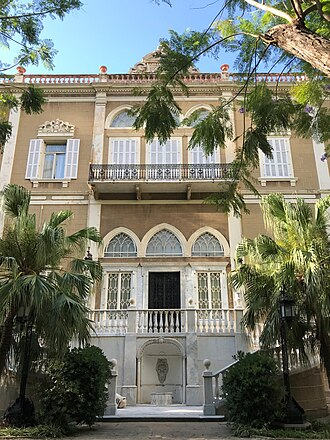
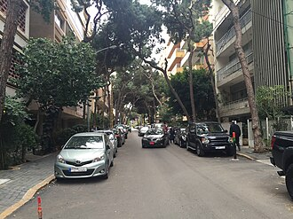
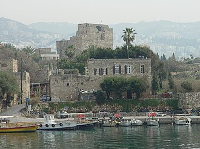
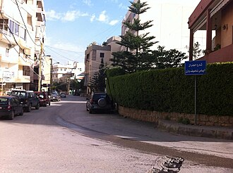
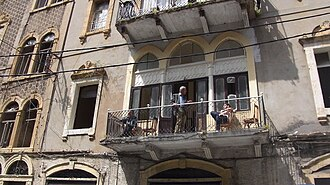
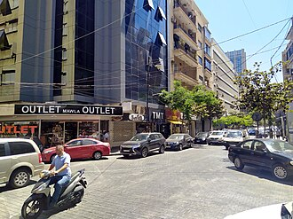
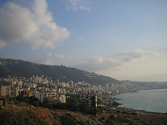
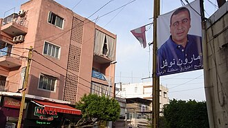
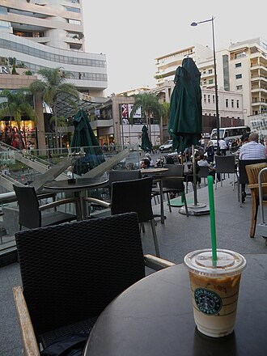
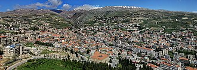

achrafieh
Sursock Palace in Achrafieh, Beirut.jpg — Edeyrn87
Original source · CC BY-SA 4.0

Wikimedia 330px resized rendition; displayed with a square cover crop. No color or content edits.
Curated neighborhood photographs used in Studently search. Each photo retains its stated license; the application code is not covered by the photo license.

Sursock Palace in Achrafieh, Beirut.jpg — Edeyrn87
Original source · CC BY-SA 4.0
Wikimedia 330px resized rendition; displayed with a square cover crop. No color or content edits.

Alam street.jpeg — Imageuploader2
Original source · CC BY-SA 4.0
Wikimedia 330px resized rendition; displayed with a square cover crop. No color or content edits.

Byblos Old Port of the city.jpg — Serge Melki from Indianapolis, USA
Wikimedia 330px resized rendition; displayed with a square cover crop. No color or content edits.

General Wessin Street, Dekwaneh, Lebanon.jpg — Ewazen
Wikimedia 330px resized rendition; displayed with a square cover crop. No color or content edits.

Rue Gouraud (155509387).jpeg — Sluggh Mcgee
Wikimedia 330px resized rendition; displayed with a square cover crop. No color or content edits.

Hamra Street, Beirut (1).jpg — Radosław Botev
Original source · CC BY 3.0 pl
Wikimedia 330px resized rendition; displayed with a square cover crop. No color or content edits.

Jounieh Bay.jpg — Serouj
Original source · Public domain
Wikimedia 330px resized rendition; displayed with a square cover crop. No color or content edits.

Rue Armenia East Beirut (152804059).jpeg — Sluggh Mcgee
Wikimedia 330px resized rendition; displayed with a square cover crop. No color or content edits.

Verdun beirut.jpg — A.K.Khalifeh
Original source · CC BY-SA 3.0
Wikimedia 330px resized rendition; displayed with a square cover crop. No color or content edits.

Zahle2013.jpg — Heinz Hövel
Original source · CC BY-SA 3.0
Wikimedia 330px resized rendition; displayed with a square cover crop. No color or content edits.


.jpeg){kind=link}
.jpg){kind=link}

.jpeg){kind=link}